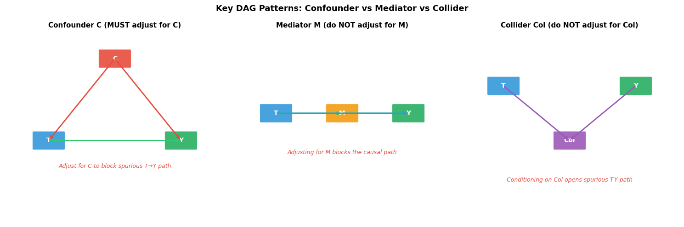
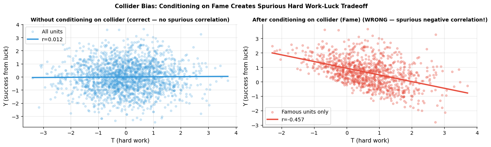
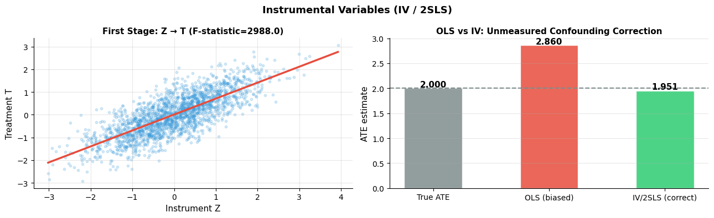

How do you identify causal structure?#
Topics: DAGs · d-separation · Backdoor Criterion · Frontdoor Criterion · Collider Bias · Mediators vs Confounders · Instrumental Variables · DoWhy
1. Directed Acyclic Graphs (DAGs)#
What it is#
A DAG is a graphical representation of causal assumptions
Nodes = variables, directed edges = direct causal effects
Acyclic = no feedback loops
Encodes what you believe about the data generating process
Key node types#
Type |
Definition |
Effect on analysis |
|---|---|---|
Confounder |
Common cause of T and Y |
Must adjust for it |
Mediator |
On the causal path T → M → Y |
Do NOT adjust (blocks causal path) |
Collider |
Common effect of two variables |
Do NOT adjust (opens spurious path) |
Moderator |
Modifies strength of effect |
Subgroup analysis |
Key intuition#
Confounders create spurious associations — control for them
Mediators carry the causal effect — controlling blocks the effect you want to measure
Colliders create spurious associations WHEN you condition on them — leaving them alone is correct
Assumptions#
DAG is correctly specified — all important variables and relationships included
No hidden common causes (causal sufficiency)
Acyclicity — no feedback loops in the system
Validation#
Domain knowledge review — consult subject matter experts
Independence tests — test implied conditional independences in the data
Refutation tests in DoWhy — test whether estimates are robust to DAG changes
If violated#
Missing confounder → sensitivity analysis, IV
Wrong structure → try alternative DAGs, compare estimates
import numpy as np
import matplotlib.pyplot as plt
import matplotlib.patches as mpatches
try:
import networkx as nx
HAS_NX = True
except ImportError:
HAS_NX = False
print("Install networkx: pip install networkx")
fig, axes = plt.subplots(1, 3, figsize=(15, 5))
def draw_dag(ax, nodes, edges, title, colors, annotations=None):
ax.set_xlim(0, 10); ax.set_ylim(0, 7); ax.axis('off')
ax.set_title(title, fontsize=11, fontweight='bold')
positions = {}
for name, (x, y) in nodes.items():
positions[name] = (x, y)
color = colors.get(name, '#7F8C8D')
rect = mpatches.FancyBboxPatch((x-0.7, y-0.3), 1.4, 0.6,
boxstyle='round,pad=0.05', facecolor=color, edgecolor='white', linewidth=1.5, alpha=0.9)
ax.add_patch(rect)
ax.text(x, y, name, ha='center', va='center', fontsize=10, fontweight='bold', color='white')
for (src, dst), style in edges.items():
x1, y1 = positions[src]
x2, y2 = positions[dst]
color = style.get('color', '#555555')
ls = style.get('ls', '-')
ax.annotate('', xy=(x2, y2), xytext=(x1, y1),
arrowprops=dict(arrowstyle='->', color=color, lw=2, linestyle=ls))
if annotations:
for (x, y, text, color) in annotations:
ax.text(x, y, text, ha='center', fontsize=9, color=color, style='italic')
# 1. Confounder
draw_dag(axes[0],
nodes={'C': (5,6), 'T': (2,3), 'Y': (8,3)},
edges={('C','T'): {'color':'#E74C3C'}, ('C','Y'): {'color':'#E74C3C'}, ('T','Y'): {'color':'#2ECC71'}},
colors={'C':'#E74C3C','T':'#3498DB','Y':'#27AE60'},
title='Confounder C (MUST adjust for C)',
annotations=[(5,2,'Adjust for C to block spurious T→Y path','#E74C3C')])
# 2. Mediator
draw_dag(axes[1],
nodes={'T': (2,4), 'M': (5,4), 'Y': (8,4)},
edges={('T','M'): {'color':'#2ECC71'}, ('M','Y'): {'color':'#2ECC71'}, ('T','Y'): {'color':'#3498DB'}},
colors={'T':'#3498DB','M':'#F39C12','Y':'#27AE60'},
title='Mediator M (do NOT adjust for M)',
annotations=[(5,2.5,'Adjusting for M blocks the causal path','#E74C3C')])
# 3. Collider
draw_dag(axes[2],
nodes={'T': (2,5), 'Y': (8,5), 'Col': (5,3)},
edges={('T','Col'): {'color':'#9B59B6'}, ('Y','Col'): {'color':'#9B59B6'}},
colors={'T':'#3498DB','Y':'#27AE60','Col':'#9B59B6'},
title='Collider Col (do NOT adjust for Col)',
annotations=[(5,1.5,'Conditioning on Col opens spurious T-Y path','#E74C3C')])
plt.suptitle('Key DAG Patterns: Confounder vs Mediator vs Collider', fontsize=13, fontweight='bold')
plt.tight_layout()
plt.savefig('dag_patterns.png', dpi=120, bbox_inches='tight')
plt.show()

2. Backdoor & Frontdoor Criteria#
Backdoor Criterion#
A set of variables Z satisfies the backdoor criterion if:
Z blocks all backdoor paths (paths with arrows into T)
Z contains no descendants of T
If Z satisfies backdoor criterion → controlling for Z identifies the causal effect
Frontdoor Criterion#
Used when there are unmeasured confounders but a measured mediator exists
Three conditions: M intercepts all paths from T to Y, no unblocked backdoor paths into M, all backdoor paths from M to Y are blocked by T
Rare in practice but powerful when applicable
Key intuition#
Backdoor: close all non-causal paths into T by conditioning on the right variables
Frontdoor: when you can’t block the backdoor, go through the front — via the mediator
Collider Bias#
Conditioning on a collider (variable caused by both T and Y) opens a spurious association
Example: conditioning on ‘hospitalization’ when studying smoking and cancer — both cause hospitalization — creates spurious negative correlation between smoking and cancer among hospitalized patients
Interview Q&A#
How do you decide which variables to control for?
Draw the DAG, identify backdoor paths, find a sufficient adjustment set
Do NOT control for mediators or colliders — only confounders
Use DAGitty or DoWhy to automate adjustment set identification
What is the difference between adjusting for a mediator and a confounder?
Confounder adjustment removes bias — necessary for causal identification
Mediator adjustment blocks the causal path — removes the effect you’re trying to measure
Gotchas#
More controls is NOT always better — controlling for colliders introduces bias
A variable can be a confounder in one analysis and a mediator in another — context matters
Always draw the DAG before deciding what to adjust for
import numpy as np
import matplotlib.pyplot as plt
np.random.seed(42)
n = 2000
# Demonstrate collider bias
U1 = np.random.randn(n) # affects T (e.g. talent)
U2 = np.random.randn(n) # affects Y (e.g. luck)
T = U1 + np.random.randn(n) * 0.5 # treatment (e.g. hard work)
Y = U2 + np.random.randn(n) * 0.5 # outcome (e.g. success)
Col = T + Y + np.random.randn(n) * 0.3 # collider (e.g. fame = work + luck)
# True correlation T-Y: should be ~0 (no direct path)
r_true, _ = np.corrcoef(T, Y)[0,1], None
r_true = np.corrcoef(T, Y)[0, 1]
# Correlation within high-fame people (conditioning on collider)
high_col = Col > Col.mean()
r_biased = np.corrcoef(T[high_col], Y[high_col])[0, 1]
print(f"True T-Y correlation (no conditioning) : {r_true:.3f}")
print(f"Biased T-Y correlation (conditioning on collider): {r_biased:.3f}")
print("Conditioning on collider creates spurious NEGATIVE correlation!")
fig, axes = plt.subplots(1, 2, figsize=(13, 4))
axes[0].scatter(T, Y, alpha=0.2, s=15, color='#3498DB', label='All units')
m, b = np.polyfit(T, Y, 1)
x_range = np.linspace(T.min(), T.max(), 100)
axes[0].plot(x_range, m*x_range+b, color='#3498DB', linewidth=2.5, label=f'r={r_true:.3f}')
axes[0].set_xlabel('T (hard work)', fontsize=11); axes[0].set_ylabel('Y (success from luck)', fontsize=11)
axes[0].set_title('Without conditioning on collider (correct — no spurious correlation)', fontsize=10, fontweight='bold')
axes[0].legend(fontsize=10); axes[0].grid(True, alpha=0.3)
axes[0].spines['top'].set_visible(False); axes[0].spines['right'].set_visible(False)
axes[1].scatter(T[high_col], Y[high_col], alpha=0.3, s=15, color='#E74C3C', label='Famous units only')
m2, b2 = np.polyfit(T[high_col], Y[high_col], 1)
x_range2 = np.linspace(T[high_col].min(), T[high_col].max(), 100)
axes[1].plot(x_range2, m2*x_range2+b2, color='#E74C3C', linewidth=2.5, label=f'r={r_biased:.3f}')
axes[1].set_xlabel('T (hard work)', fontsize=11); axes[1].set_ylabel('Y (success from luck)', fontsize=11)
axes[1].set_title('After conditioning on collider (Fame) (WRONG — spurious negative correlation!)', fontsize=10, fontweight='bold')
axes[1].legend(fontsize=10); axes[1].grid(True, alpha=0.3)
axes[1].spines['top'].set_visible(False); axes[1].spines['right'].set_visible(False)
plt.suptitle('Collider Bias: Conditioning on Fame Creates Spurious Hard Work-Luck Tradeoff', fontsize=11, fontweight='bold')
plt.tight_layout()
plt.savefig('collider_bias.png', dpi=120, bbox_inches='tight')
plt.show()
True T-Y correlation (no conditioning) : 0.012
Biased T-Y correlation (conditioning on collider): -0.457
Conditioning on collider creates spurious NEGATIVE correlation!

3. Instrumental Variables (IV)#
What it is#
IV is used when there are unmeasured confounders that cannot be controlled for
An instrument Z affects treatment T but does NOT directly affect outcome Y (except through T)
Two-stage least squares (2SLS): Stage 1 — regress T on Z; Stage 2 — regress Y on predicted T
Classic examples#
Random lottery as instrument for military service
Distance to college as instrument for education
Rainfall as instrument for agricultural income
Assumptions#
Relevance: Z strongly predicts T — weak instrument causes large variance
Exclusion restriction: Z affects Y ONLY through T — untestable, requires theory
Independence: Z is independent of unmeasured confounders
IV estimates LATE (Local Average Treatment Effect) — effect for compliers only
Validation#
First stage F-statistic > 10 — instrument is strong enough
Exclusion restriction — cannot be tested statistically, requires domain reasoning
Sargan-Hansen overidentification test — when multiple instruments available
If violated#
Weak instrument (F < 10) → find stronger instrument or use limited information maximum likelihood (LIML)
Exclusion violation → IV estimate is biased — no statistical fix, need better instrument
Gotchas#
IV always estimates LATE, not ATE — only for units whose treatment changes with the instrument
IV estimates are often larger than OLS — because IV focuses on a subset (compliers)
Weak instruments cause extreme bias — always report first-stage F-statistic
import numpy as np
import matplotlib.pyplot as plt
import statsmodels.api as sm
np.random.seed(42)
n = 2000
# Unmeasured confounder U
U = np.random.randn(n)
# Instrument Z (e.g. random assignment, distance)
Z = np.random.randn(n)
# Treatment T — affected by both Z (instrument) and U (confounder)
T = 0.7*Z + 0.5*U + np.random.randn(n)*0.3
# Outcome Y — affected by T (true effect=2) and U (confounder), NOT directly by Z
Y = 2.0*T + 1.5*U + np.random.randn(n)*0.5
# Naive OLS (biased — ignores U)
ols = sm.OLS(Y, sm.add_constant(T)).fit()
ols_ate = ols.params[1]
# 2SLS
stage1 = sm.OLS(T, sm.add_constant(Z)).fit()
T_hat = stage1.fittedvalues
stage2 = sm.OLS(Y, sm.add_constant(T_hat)).fit()
iv_ate = stage2.params[1]
f_stat = stage1.fvalue
print(f"True ATE : 2.000")
print(f"OLS (biased) : {ols_ate:.3f} (upward bias from confounder U)")
print(f"IV/2SLS : {iv_ate:.3f} (corrects for unmeasured confounding)")
print(f"First-stage F-statistic: {f_stat:.1f} (should be > 10 — strong instrument)")
fig, axes = plt.subplots(1, 2, figsize=(13, 4))
# First stage
axes[0].scatter(Z, T, alpha=0.2, s=10, color='#3498DB')
m, b = np.polyfit(Z, T, 1)
x_range = np.linspace(Z.min(), Z.max(), 100)
axes[0].plot(x_range, m*x_range+b, color='#E74C3C', linewidth=2.5)
axes[0].set_xlabel('Instrument Z', fontsize=11); axes[0].set_ylabel('Treatment T', fontsize=11)
axes[0].set_title(f'First Stage: Z → T (F-statistic={f_stat:.1f})', fontsize=11, fontweight='bold')
axes[0].grid(True, alpha=0.3)
axes[0].spines['top'].set_visible(False); axes[0].spines['right'].set_visible(False)
# ATE comparison
axes[1].bar(['True ATE', 'OLS (biased)', 'IV/2SLS (correct)'], [2.0, ols_ate, iv_ate],
color=['#7F8C8D', '#E74C3C', '#2ECC71'], alpha=0.85, edgecolor='white', width=0.5)
axes[1].axhline(2.0, color='#7F8C8D', linewidth=1.5, linestyle='--')
axes[1].set_ylabel('ATE estimate', fontsize=11)
axes[1].set_title('OLS vs IV: Unmeasured Confounding Correction', fontsize=11, fontweight='bold')
axes[1].grid(True, alpha=0.3, axis='y')
axes[1].spines['top'].set_visible(False); axes[1].spines['right'].set_visible(False)
for i, val in enumerate([2.0, ols_ate, iv_ate]):
axes[1].text(i, val+0.03, f'{val:.3f}', ha='center', fontsize=11, fontweight='bold')
plt.suptitle('Instrumental Variables (IV / 2SLS)', fontsize=13, fontweight='bold')
plt.tight_layout()
plt.savefig('iv.png', dpi=120, bbox_inches='tight')
plt.show()
True ATE : 2.000
OLS (biased) : 2.860 (upward bias from confounder U)
IV/2SLS : 1.951 (corrects for unmeasured confounding)
First-stage F-statistic: 2988.0 (should be > 10 — strong instrument)
